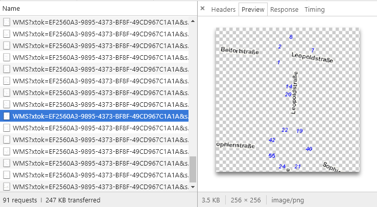

Leaflet常用的一些插件
条评论Leaflet 中常用的 gis 功能可以满足一般使用，有些特殊需求，官方也有插件系统，本文会挑选一些常用的，经过测试可用的插件单独放出来使用方法和一些注意事项，希望能够帮助到同僚们。
ImageWMS
在 openlayers 中，wms 图层的调用了提供了 IamgeWMS 和 tileWMS 两种方式，通常情况下，如果 wms 服务作为底图，由于数据量大，我们采用瓦片的方式加载十分有利，如果数据量小，我们采用单张 image 的方式无论从请求发送上和显示的效果上都更好。

Leaflet 中只提供了 tile 瓦片的方式加载 WMS 图层，在使用了很多第三方解决方案后，我发现了这款插件nonTiledLayer，使用之后的效果基本上可以达到 openlaysers 中的要求，更多情况可以点击链接进去了解。
调用方式
var layer = L.nonTiledLayer |
nonTiledLayer调用方式基本沿用 Leaflet 自身的 wms 调用，提供的属性也很全面
attribution - 图层数据来源.Default:' |
具体的使用效果可以移步 demo
WKT 数据插件
wkt 作为 GIS 常用的一种地理数据格式，因为通用性需求度也很高,Leaflet 官方插件中提供了许多支持 wkt 的第三方解决方案，使用下来，发现 mapbox 出品的leaflet-omnivore效果可以说是目前最满足要求的了。
omnivore支持的功能比较强大
omnivore.csv("a.csv").addTo(map); |
其中对于 wkt 的加载有两种方式。
其中，customlayer是通过L.geojson图层来为加载进来的 wkt 数据设置样式
let customLayer = L.geoJson(null, { |
omnivore.wkt(url, parser_options?, customLayer?): 通过 url 加载omnivore.wkt.parse(wktString，parser_options?, customLayer?): 通过转换 wkt 字符串加载
具体的使用效果可以移步demo